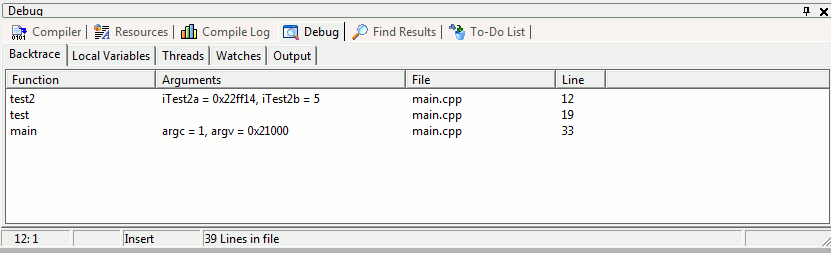

Backtracing is the debugging concept
that tells you which functions were called before reaching a breakpoint
or an interruption (like an access violation or other runtime error).
Let’s do a simple test. Move the breakpoint
in your sampleDebug project to the printf
line within the test2 (line 12). Then, re-run
the debugger (shortcut: F8). If you look
at the Debug
window in the Backtrace tab, you should see
something like this:

This correctly shows the list of
functions that have been called (since
the start of the program) before reaching the breakpoint. Clicking on a
function in this list will bring you to its implementation in your
source code. So, for example, if you click on test,
the IDE will take you to line 19 in the source code. Note also that the
variable arguments that were passed into the function are displayed
along with their current values.
Now uncomment lines 24-27 in the
function test.
When you try to debug this time, the program will eventually cause an
access violation and end. The IDE should display which line
triggered the error and the backtrace should display the current
variables and their values.